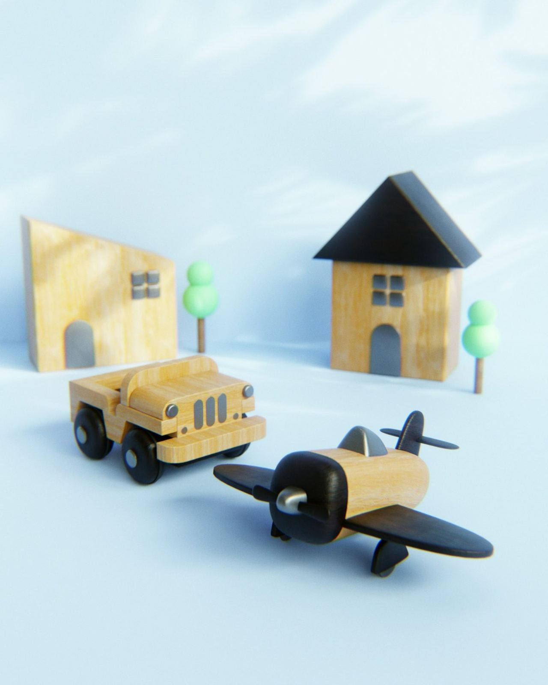
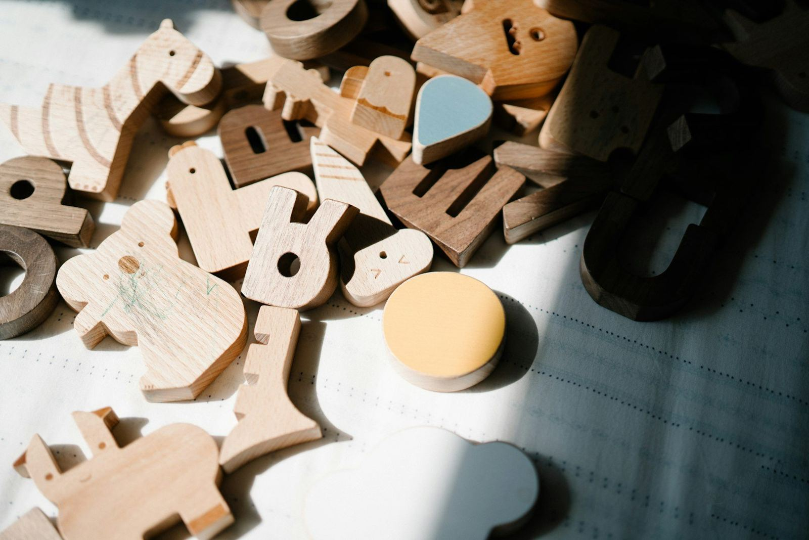

2001'den beri aynı adreste
Hacettepe'de yetişmiş bir çocuk doktoruyla büyüme takibi, aşı ve muayene.



Çocuk sağlığı hizmetleri
Doğumdan ergenliğe kadar düzenli izlem ve tedavi.
Sağlam çocuk izlemi
Büyüme ve gelişme takibi, boy ve kilo ölçümü düzenli kontrollerle izlenir.
Aşı takibi
Ulusal aşı takvimi ve isteğe bağlı aşılar hakkında bilgi verilir, takip yapılır.
Yenidoğan muayenesi
Doğum sonrası ilk haftalarda beslenme, sarılık ve gelişim değerlendirmesi yapılır.
Çocukluk çağı hastalıkları
Ateş, öksürük, ishal ve enfeksiyon şikayetlerinde muayene ve tedavi yapılır.
Çocuk beslenmesi
Ek gıdaya geçiş, iştahsızlık ve kilo alımı konularında aileye yol gösterilir.
Muayenehane tahlilleri
Gerektiğinde tam kan sayımı gibi temel testler muayenehanede yapılabilir.
Muayene nasıl ilerler?
Çocuğunuz için sakin, aileniz için açık bir süreç.
Randevu
Çocuğunuzu bekletmeden muayene edebilmek için randevulu çalışılır.
Muayene
Çocuğunuzun yaşına uygun, sakin bir ortamda ayrıntılı muayene yapılır.
Bilgilendirme
Bulgular ve tedavi anlaşılır biçimde size anlatılır, sorularınız yanıtlanır.
İzlem
Gerekli kontroller ve aşı takibi için bir sonraki randevu planlanır.
Size uygun bir saat bulalım
Formu doldurun ya da arayın, randevunuzu birlikte planlayalım.